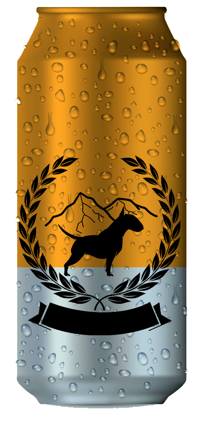
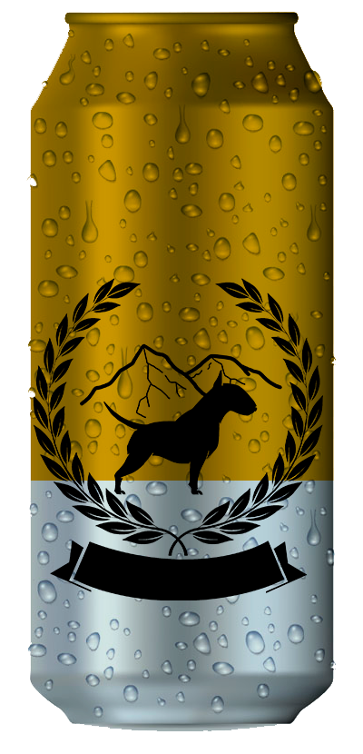
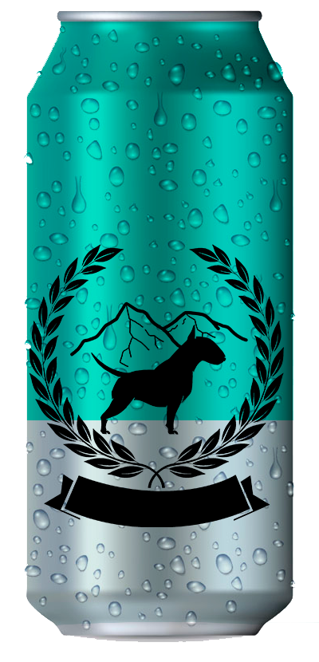
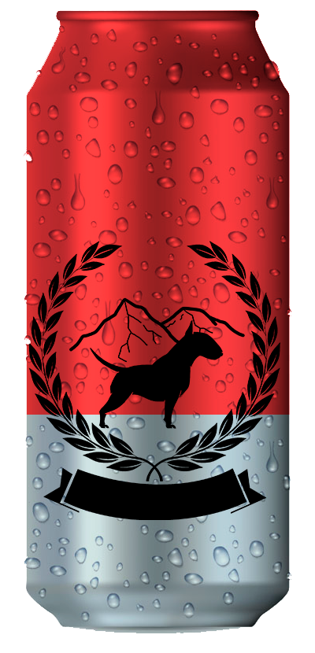

Neipa
la ideal para los enamorados de el aroma del lúpulo pero no de su amargor su color se asemeja al de el jugo de naranja.

Honey
Su aroma y gusto a miel características de un agregado en el punto justo de la maduración de la miel para tener un balance entre amargor y dulzor equilibrado.

Ipa
Se destaca por su pronunciado amargor y su inconfundible aroma a lúpulo.

Irish red
Su aroma a toffie y caramelo son sus características principales en las q se destaca más q el lupulo.